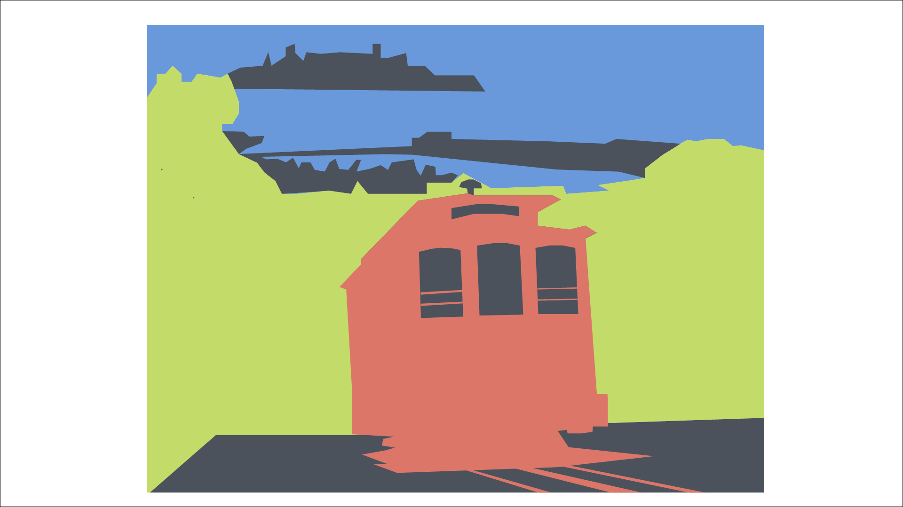
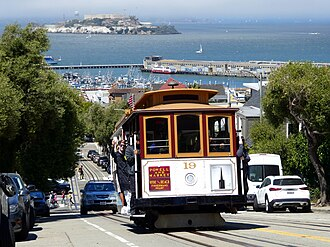
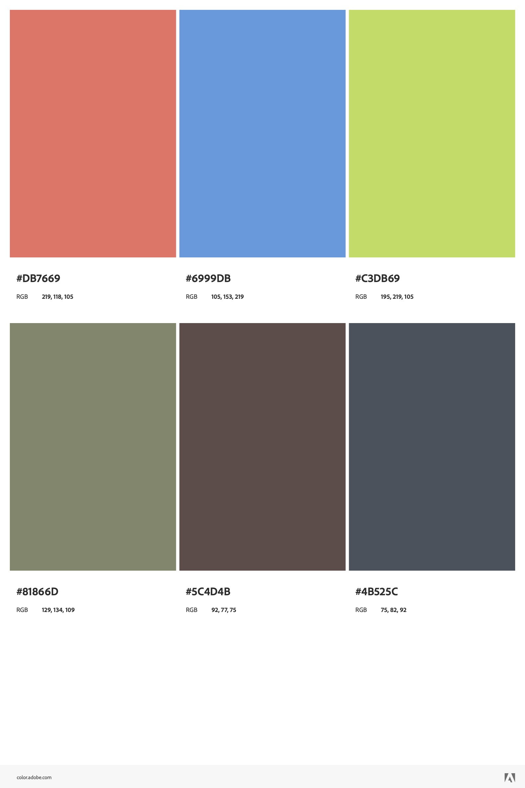

Although I have never been to San Francisco, the images of the steep hills appeared in my mind when thinking about an environment with clear foreground, middle-ground, and background. The position from which the photograph was taken on the hill was important for the clarity of the three spaces. I chose this photograph with the trolley that represents another characteristic of San Francisco and it provided me with a subject to communicate the foreground.
Alluding to the steepness of the hills, the foreground was constrained to the trolley and the stretch of road closest to the viewer. I thought it was necessary for the colors in my triad scheme to include 1 blue and 1 green to parallel the main colors in the original photo. I moved one of the circles on Adobe Color until I was satisfied with the blue and the green. The third color for the trolley was decided for me. I utilized the Pen Tool with the colors from the scheme to distinguish the parts of the environment first. By separating the main layers by the foreground, the middle-ground , and the foreground, I was able to organize and reorder the sublayers. I used the supporting colors provided by Adobe Color for details in the background and the foreground. During the last step, I was deliberating how much detail for the trolley.
| original: Wikimedia | triad scheme: adobe color |
|---|---|
|
 |
 |
{kind=link}